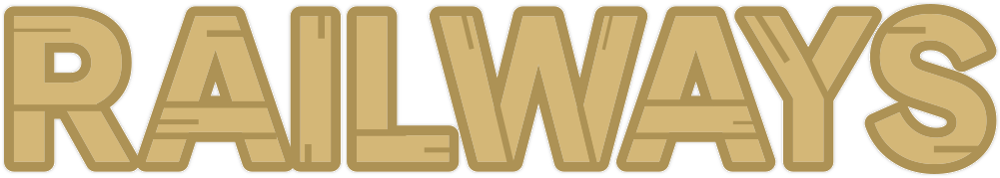
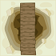
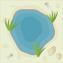

A játék rövid leírása
A játék különböző méretű négyzetrácsos hálón játszódhat, ahol a célunk az, hogy egy összefüggő
körvasútvonalat alkossunk úgy,
hogy minden olyan helyre eljusson a vonat, ahova lehetséges.
A térképen több különböző típusú mező található, melyek a játék kezdetén látszódnak a térképen:
-
Üres mező
Ebben a cellában a vasútvonal a belépési irányon kívül maradék három irányba tud haladni. -

Híd mező
Ezen a mezőn a vasútvonalat csak a híd által megadott egyenes írányban lehet megépíteni. -
Hegy mező
Ezeken a mezőkön a sziklák a cellának két szomszédos kijáratát lezárják, így csak 90°-ban elfordulva lehet továbbhaladni. -

Óázis
Erre a cellára nem lehet vasutat építeni.
Vasútvonalat bal kattintással tudunk letenni, és minden további kattintáskor, pedig forgatunk rajta. A sín eltávolítását az egér jobb gombjával tudjuk elvégezni.
Mivel szeretnénk a vasúthálózat alapanyagán spórolni, így a vasúthálózat sehol nem keresztezheti önmagát, sehol nem ágazhat el, és nem haladhat át többször egy cellán!